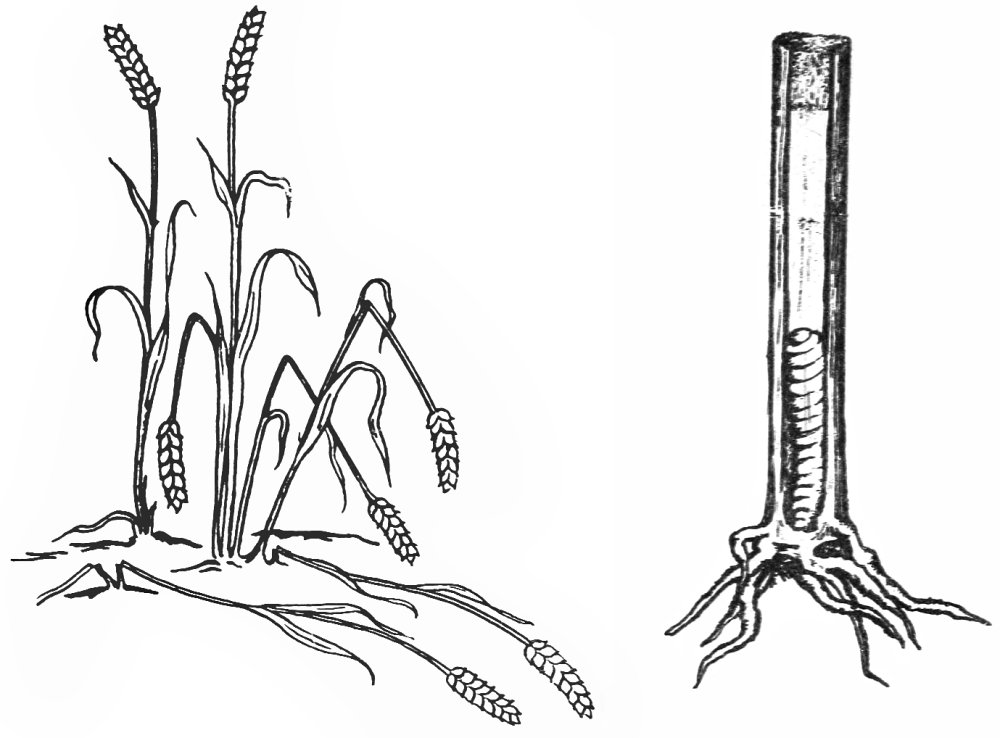
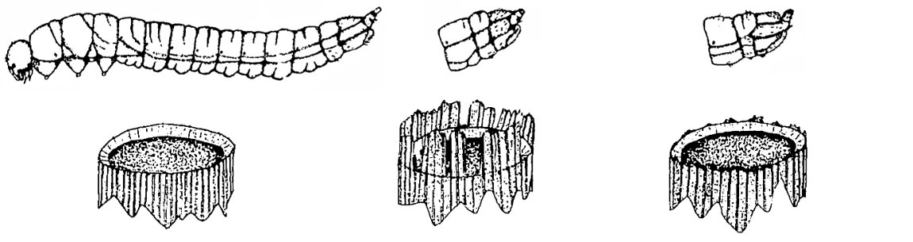

Stem stumps
This page collects images of stem stumps created by borer larvae that I encountered in the survey. At least seven different insect families are represented, spread across all four major orders. Click on "Images" in the page navigation menu (at left or above) to jump to the Images section, or use the list of links below for finer-grained navigation to the individual images. I have also summarized some other instances of stemp stump-forming larvae reported in the entomological literature ("Related Reports", below).

 Prev
Prev


The following table provides some additional examples of larvae from around the world that construct stem stumps in herbaceous tissue, drawn from the entomological literature. This list is not intended to be comprehensive.
| Order | Family | Lower taxon | Host plant | Description | Reference |
|---|---|---|---|---|---|
| Coleoptera | Cerambycidae | Dectes sayi | Ambrosia artemisiifolia (Asteraceae) | Stem girdled "5.0-8.0 cm above ground level" and plugged with "2.5-7.5 cm...of tightly packed powdery frass" (p. 301); plant above girdled area lodges and larva overwinters in root at or below ground level | Piper (1978) |
| Coleoptera | Cerambycidae | Dectes texanus | Glycine max (Fabaceae) | As stem dries near season's end, "larvae tunnel down to the base of the plant, girdle the inside of the stem about 5 cm (2 in) above the soil line and plug the tunnel with frass" (p. 4); this is followed by "subsequent late season lodging" (p. 5) of some affected plants. "Lodged stems with a smooth concave break near soil level are an indicator of Dectes stem borer larval girdling (Campbell 1980)" (p. 7). | Rystrom (2015) |
| Coleoptera | Curculionidae | Lixus macer | Helianthus grosseserratus (Asteraceae) | "Late in October, pieces of these stems, from one and a half to three feet long, were found lying about on the ground, evidently having been gnawed off from within, excepting the thin, outer bark, which had apparently been broken by the wind. These pieces contained [an apparent L. macer] larva" (pp. 11-12). So "stem logs" are produced, rather than stem stumps? See discussion in entry for L. concavus, below. | Webster (1889) |
| Coleoptera | Curculionidae | Lixus concavus | Helianthus sp. (Asteraceae) | "When full grown, the larvae girdle the stems from within, at irregular intervals...only the thin outer bark is left intact, to be broken off by the winds...the larva [plugs the opening] with fibrous matter, taken from within the stem...[the girdled stem] sections are not to be found scattered about on the ground much before October." (pp 15-16). These accounts of "stem logs" made by L. macer (see previous entry in this table) and L. concavus do not specifically mention stumps still anchored to the ground. However, Webster writes, "we have taken thirteen full grown larvae from a section of Helianthus only about as many inches in length" (p. 13), and with so many larvae per stem, it seems likely some end up dwelling near ground level and girdling the plant above that point. These entries are listed tentatively. | Webster (1889) |
| Coleoptera | Mordellidae | Mordellistena ?nubila | Tridens flavus (as Triodia cuprea) (Poaceae) | "At from one to two inches above the ground the stem is almost cut through so that it is frequently broken off by the wind." (p. 321) | Riley (1892) (POWO 2026 for grass taxonomy) |
| Hymenoptera | Cephidae | Cephus spp., including C. cinctus, C. pygmaeus, and C. tabidus | Various cultivated grains, incl. wheat, barley, rye, oats; numerous wild grasses (Poaceae) (see Wallace & McNeal for full host list) | Larvae "girdle the stem at the base when preparing for hibernation. Girdled stems break off and lodge or fall to the ground (fig. 2)" (p. 5). Fig. 1 in this publication (see reproduction below this table) suggests the three Cephus species may be differentiated in part by the appearance of the tops of the stem stumps they produce. | Wallace and McNeal (1966) |
| Lepidoptera | Crambidae, Noctuidae | Busseola fusca (Noctuidae); Chilo (Crambidae) and Sesamia (Noctuidae) spp. | Zea mays; Sorghum (Poaceae) | Larval feeding of B. fusca may cause "lodging and breakage" in Z. mays (Haile, p. 55). Chilo and Sesamia spp. may cause similar damage to corn and/or sorghum, possibly in the same agricultural fields. Older larvae of B. fusca and C. zonellus tunnel "into the stem both vertically downwards and horizontally across. It is this latter activity which gives a characteristic line..." [Text goes to next page, which is unavailable to JvdL, but this seems to suggest the stem breakage is something more than an incidental result of vertical tunneling.] (Duerden, p. 105) | Chernoh (2014); Duerden (1953); Haile (2024) |
| Lepidoptera | Noctuidae | Ostrinia nubilalis | Zea mays (Poaceae) | "Boring damage may weaken the plant, causing stalk breakage"..."Second generation borer attack may result in stalk or tassel breakage". Is the stalk breakage deliberate or incidental on the part of the larva? | Purdue University College of Agriculture (2026) |
| Lepidoptera | Sesiidae | Chamaesphecia nigrifrons | Hypericum spp. (Hypericaceae), incl. H. perforatum, H. hirsutum, H. maculatum, and H. tetrapterum | Stem is cut "very close to the ground, or as high as 15 cm or more" above ground in autumn, and capped with a "dome-shaped plug made of small plant fragments and silk" (p. 76). Upper portion of plant breaks off btwn. autumn & early spring, often with help of winter storms and snow. Mature pupa breaks through plug and protrudes from top of stump upon adult's emergence. | Garrevoet et al. (2019) |
{kind=link}

{kind=link}

- Chernoh, E. 2014. Maize stalk borers. Africa Soil Health Consortium and Plantwise factsheet. Retrieved September 14, 2026 from https://www.cabidigitallibrary.org/doi/pdf/10.5555/20203114212. [return to in-text citation]
- Duerden, J.C. 1953. Stem borers of cereal crops at Kongwa, Tanganyika, 1950-52. The East African Agricultural Journal 19(2): 105-119.[return to in-text citation]
- Davis, E.G., Callenbach, J.A., and J.A. Munro. 1950. The wheat stem sawfly and its control. United States Department of Agriculture Bureau of Entomology and Plant Quarantine. 10 pp.[return to in-text citation]
- Garrevoet, T., Goossens, R., and R. Meert. 2019. Chamaesphecia nigrifrons (Lepidoptera: Sesiidae), een nieuwe wespvlindersoort voor België. Phegea 47(3): 74-79.[return to in-text citation]
- Haile, A. 2024. Damage and insecticidal control of stem borer (Busseola fusca L; Lepidoptera: Noctuidae) on maize in Halhal Begoss. Journal of Agriculture and Ecology 19: 55-58.[return to in-text citation]
- Piper, G.L. 1978. Biology and immature stages of Dectes sayi Dillon and Dillon (Coleoptera: Cerambycidae). The Coleopterists Bulletin 32(4): 299-306. http://www.biodiversitylibrary.org/page/58743305[return to in-text citation]
- POWO. 2026. Triodia cuprea J.Jacq. In Plants of the World Online. Facilitated by the Royal Botanic Gardens, Kew. Published on the Internet. Retrieved September 14, 2026 from https://powo.science.kew.org/taxon/urn:lsid:ipni.org:names:1026384-2.[return to in-text citation]
- Purdue University College of Agriculture. 2026. European corn borers (corn). Field Crops IPM factsheet. Retrieved September 14, 2026 from https://ag.purdue.edu/department/entm/extension/field-crops-ipm/corn/european-corn-borers.html.[return to in-text citation]
- Riley, C.V. 1892. Coleopterous larvae with so-called dorsal prolegs. Proceedings of the Entomological Society of Washington 2(3): 319-324.[return to in-text citation]
- Rystrom, Z.D. 2015. Seasonal activity and sampling methods for the Dectes stem borer, Dectes texanus Leconte, in Nebraska soybeans. M.S. thesis, University of Nebraska.[return to in-text citation]
- Wallace, L.E. and F.H. McNeal. 1966. Stem sawflies of economic importance in grain crops in the United States. U.S. Department of Agriculture Technical Bulletin 1350. 50 pp.[return to in-text citation][return to in-text citation]
- Webster, F.M. 1889. Some studies of the development of Lixus concavus, Say, and L. macer, Leconte. Entomologica Americana 5(1): 11-16. Retrieved September 15, 2026 from http://www.biodiversitylibrary.org/page/11422296.[return to in-text citation][return to in-text citation]
Page created: September 7, 2026. Last update: September 12, 2026